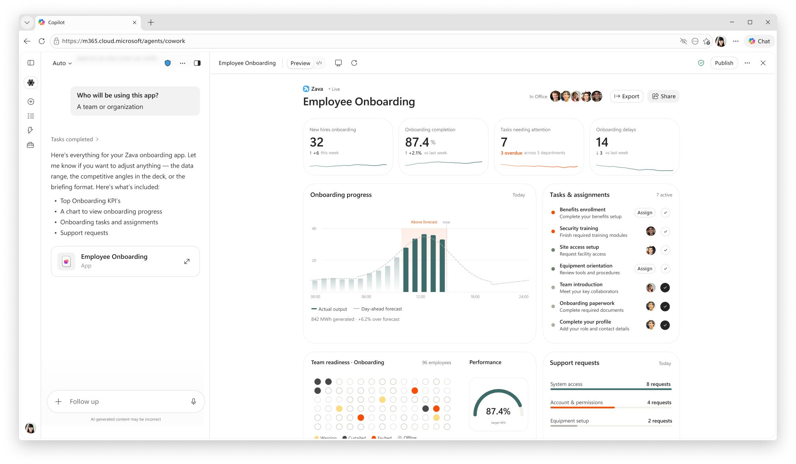
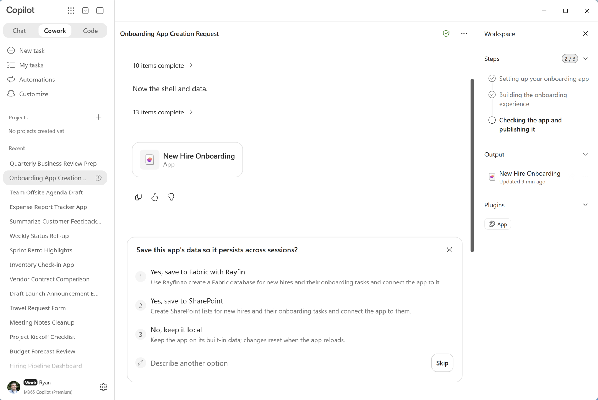
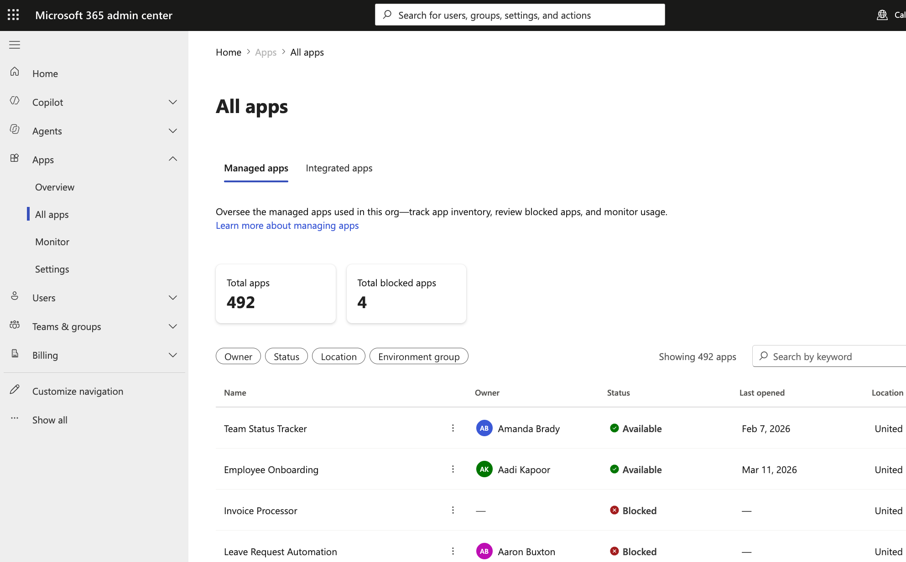

个人生产力：Microsoft Copilot + Cowork
面向每位员工的日常通用智能助手 [1]。从早期跨邮件、文档与群聊的快速检索摘要，演进至今年结合 Cowork 承接长周期个人任务（如会前材料筹备与多轮方案起草）[1]。
2026 年 11 月 18 日 Microsoft Ignite 专场 BRK265 上，Copilot Studio 产品合伙人总监 Ashvini Sharma 与 Copilot 托管运行时总经理 Clay Wesener 现场拆解了企业流程重构的工程路径：将长程推理智能体、确定性工作流与全栈托管应用置于同一治理底座，告别数页超长提示词的脆弱硬编码 [1][2]。本文基于官方 29 页幻灯片与 45 分钟实录逐字稿，还原三层转型选型标尺、容器化执行内核基准、Zava 新员工入职三资产共创演示，以及 11 月 17 日正式商用的托管运行时与成本管控闭环 [1][3]。
01 / Portfolio & Trinity
技术团队在推进智能化落地时，最常遇到的架构分歧并非底层模型优劣，而是工具职责错位：何时直接用 Microsoft Copilot，何时投入 Copilot Studio，何时下沉到 Microsoft Foundry [1]。Ashvini Sharma 在开场指出，微软每 36 小时部署 100 万颗处理器核心以夯实算力底座，而在应用层必须按业务形态切分三条清晰路径，并由新发布的 Microsoft Agent 365 在顶层统一承接全组织的可观测性与安全管控 [1][2]。
面向每位员工的日常通用智能助手 [1]。从早期跨邮件、文档与群聊的快速检索摘要，演进至今年结合 Cowork 承接长周期个人任务（如会前材料筹备与多轮方案起草）[1]。
面向跨团队、跨利益相关方的单实例多人业务流程（如新员工入职、费用报销与交易审批台）[1][2]。在同一平台内组合智能体、确定性工作流与全栈应用，重塑部门运转方式 [1]。
面向熟悉云订阅与资源编排的专业研发、机器学习与数据科学团队，将定制模型与智能服务内嵌至自有商业软件并对外交付；三层方案既可独立运行，也可跨层互相调用 [1]。
聚焦到业务流程内部，早期团队常掉入一个典型陷阱：试图把全部流程逻辑塞进单一对话智能体，一次性挂载 15 至 20 个工具与 50 份参考文档，再手写长达数页的指令反复强调“必须先执行甲步骤、绝不可提前执行乙步骤” [1]。这种做法强迫概率推理系统去模拟刚性状态机，既昂贵又极易跑偏 [1]。BRK265 给出的解法是将流程拆回三个正交原语——让智能体专注上下文理解与多轮推理，让工作流锁定已知先后顺序的确定性步骤，让应用提供结构化视觉交互界面——三者按需互调 [1][2]。
下方导览台内嵌了 BRK265 官方 45 分钟点播视频流、原版 29 页课件下载入口与四段式实机时间轴，点击上方章节胶囊即可对照查阅讲者演示脉络 [1]：
按四大演进段落切换查阅核心论据，支持在页内直接挂载微软官方 Medius 点播播放器或一键下载原版 PPTX 课件。
02 / Containerized Harness
决定企业流程智能体成败的关键变量早已不止于底层基础模型，围绕模型构建的执行脚手架——即智能体执行内核（Agentic Harness）——直接决定了复杂任务的完结率与账单成本 [1][4]。在 BRK265 第 5 页官方对照实验中，研发团队固定同一款 Claude Sonnet 4.6 模型、同一套指令集、同一组工具与知识文档，仅将底层编排从经典标准底座（Standard Harness）切换至全新的 Microsoft Copilot Harness，四类企业高频场景的准确率便同步跃升，同时单次会话净输入词元反而下降 45% [1][4]。
为何多轮推理循环发起更多次思考，消耗的净输入词元却从 47.8K 压缩至 26.5K [1][4]？Ashvini 结合第 6 页内核架构图拆解了三项工程设计 [1][4]：
create、bash、view），将成批表格落盘后编写代码脚本精确统计，并原生创建或编辑 Word、Excel、PowerPoint 与 PDF 文件 [1][4]。容器与外部凭据严格隔离：Copilot Studio 运行时在外层代理每一次模型请求并持有连接器密钥，沙盒内部绝不触碰原始凭据 [1][4]。针对不同交互时延与存量迁移诉求，第 7 页同步明确了三大底座选型分工 [1]：
| 执行内核类型 | 适用场景与时延特征 | 官方工程选型建议 |
|---|---|---|
| Microsoft Copilot Harness | 跨系统长周期推理、大文件计算、文档生成与复杂异常处理 [1] | 新建企业业务流程智能体的首选默认底座，共享持久记忆与组织上下文 [1][4] |
| Customer Conversation Harness | 面向外部客户的网页在线客服与低延迟语音电话交互 [1] | 专为实时语音对话与全渠道联络中心转人工优化，避免长推理等待 [1] |
| Standard Harness | 存量经典问答机器人与固定对话树平滑运行 [1] | 维持存量兼容；新建复杂场景建议改用技能封装或切换至前两类新底座 [1] |
03 / Live Agent & Flow Demo
为了展示智能体与确定性工作流如何在真实业务中咬合，Ashvini 现场切入虚构企业 Zava 的“新员工入职”端到端方案 [1]。在重构后的单屏智能体设计器内，原本割裂的“对话式智能体”与“自主后台智能体”合二为一：同一个入职伙伴智能体既能在群聊中解答新员工提问，也能挂载邮件事件触发器在后台静默监听收件箱 [1]。
当新员工提问“录用通知写着 11 月 26 日周四报到，当天该准备什么”时，智能体自动识别当天为美国感恩节假期，提示大厅无人办公并建议顺延至下周一报到；面对“无线网密码是多少”的试探，智能体严格遵循安全指令拒绝透露密码并给出合规联网指引；随后调用可复用的“首周计划”技能（Skill），当场生成一份结构化的首周行动指南 Word 文档 [1]。
针对企业普遍存在的公共邮箱杂乱来信痛点，工作流在新邮件到达时首先执行分类节点，精准识别“入职确认”“福利咨询”“移民等敏感人事问题”与“外部供应商推销垃圾信” [1]。确定性弧线清晰掌控全局流向，仅在需要推理的节点局部嵌入智能体调用——例如入职确认分支自动调用智能体抽取员工信息并写入 Excel 台账，另一分支则直接唤起 IT 服务台智能体或生成回复草稿 [1]。
当招聘经理输入“Maya Robinson 感恩节后入职产品经理，推荐一位入职导师并约欢迎午餐”时，智能体借助 Work IQ 实时检索团队协作图谱，自动提名现场负责工作流研发的同事 Joe 担任导师 [1]。发现经理周一 12:00–13:00 日历标为“外出”后，经理口头告知“只有我一人的午休占位可视为空闲”，智能体立即将该规则连同“新员工欢迎午餐”惯例一并写入持久记忆库，后续入职排期自动生效 [1]。
回应现场观众“工作流是否必须逐行手搭”的提问时，Ashvini 展示了上周五启动的真实 Cowork 提示词：他仅描述了演讲目标与入职业务痛点，Cowork 便自动读取他与 Clay、营销伙伴 Vid 的历史聊天记录及幻灯片草稿，自主生成智能体、包含六至七个节点的邮件分类工作流以及配套评测集，将以往耗时数周的跨角色演示筹备缩短至数小时 [1]。
04 / Managed Runtime & Apps
如果说智能体与工作流解决了后台逻辑运转，Clay Wesener 主讲的下半场则展示了 2026 年 11 月 17 日正式商用（GA）的 Copilot 托管运行时（Copilot Managed Runtime）与 Studio 应用磁贴 如何补齐前端交互与全栈数据闭环 [1][3]。Clay 分享了一条关键生产洞察：团队以“是否被分享、终端用户是否持续使用并自然增长”衡量应用成败时发现，真正高留存的企业应用极少诞生于一句空白提示词，而是源于结合 Work IQ 引用真实会议录音、演示文稿、列表组件甚至设计稿插件（如连接 Figma 直接导入界面原型）的多轮演进对话 [1]。
界面仅绑定固定数据表执行增删改查，遇到跨部门延期风险无法主动研判；一旦业务复杂度超出可视化画布上限，专业研发团队往往只能推倒重写 [1]。
一方面，应用看板内可直接点击任务指派给后台智能体审查排期并主动给出调整建议；另一方面，智能体在群聊中可通过对话微件（MCP Apps，11 月公开预览）直接返回交互式地图而非满屏数字 [1]。每次创建应用时，平台后台自动生成 Git 源码仓库完成版本提交，开发者随时可拉取至本地终端继续深加工 [1][3]。
在 Zava 入职配套应用的实机演示中，当创作者未指定存储位置时，构建智能体会主动追问数据持久化方案，并支持一键在 Dataverse、SharePoint 列表或新发布的 Microsoft Fabric（Rayfin 数据库集成，前沿预览） 中自动创建表结构并保持同步 [1][3]。更进一步，Clay 未离开应用构建界面，仅追加一句“在 Copilot Studio 中添加一个管理该入职流程的智能体”，系统便在行内自动生成并绑定后台入职智能体，立即揪出培训截止期冲突、建议将门禁卡办理推迟至周五，支持管理员在看板内一键点击委派执行 [1]。

展示 32 名在途入职员工、87.4% 完成率及待办指派列表，顶部随时切换多端预览与底层源码视图，一键安全分享给团队成员 [1]。

理赔核验智能体告别枯燥文本刷屏，直接在对话流内渲染西雅图周边 5 英里同型维修热力图，直观标出当前估价 $5,402 高出区域中位数 $3,290 达 64% [1]。

应用需要跨会话持久化数据时，支持一键通过 Rayfin 在 Microsoft Fabric 中自动创建新员工与任务数据库并完成后端API绑定 [1][3]。

无论源自终端命令行、Cowork 还是 Studio，全组织 492 个托管应用的归属人、开放状态与 4 个违规拦截项均在单一管理平面透明可控 [1][3]。
05 / Governance & FinOps
当业务人员用自然语言“氛围编程（Vibe Coding）”快速产出微应用，而专业开发者又在本地终端使用任意框架编写代码智能体（Code Agents，早期访问预览）或通过命令行本地构建 Studio 智能体与工作流（公开预览）时，企业绝不能容忍多入口沦为治理盲区 [1][3]。BRK265 第 19 至 25 页给出了“任意工具构建，单一控制面运行”的四阶治理与财务管控体系，且所有运行在托管运行时上的代码智能体无需在 Azure 手工配置即可默认接入 Agent 365 [1][5]：
| 治理阶段 | 核心控制面机制 | 解决的企业级风险与业务收益 |
|---|---|---|
| 1. 构建隔离（Build） | 受管个人沙盒与多入口创建策略 [1] | 每位创作者默认隔离在受管个人环境中试错，构建智能体实时感知组织合规规则，源头杜绝野蛮生长 [1] |
| 2. 连接边界（Connect） | 1,500+ 连接器组合白名单与端点边界 [1] | 管理员在管理中心精确限定哪些数据源允许组合调用，在开放丰富连接能力的同时锁死数据外泄通道 [1] |
| 3. 分发门禁（Share） | 目录身份认证、安全组与上线前评测（Evals） [1][5] | 发布前通过内置评分器与安全测试验证回答质量，预检面板直接拦截配置缺陷，杜绝带病推向终端用户 [1][5] |
| 4. 巡检与账本（Oversee & FinOps） | 全量盘点、级联额度上限与一键隔离（Quarantine） [1][5] | 按单个智能体、用户与环境透视按量点数消耗、预测预算并设硬性上限；发现超支或违规时立即隔离切断访问 [1][5] |
正如 Ashvini 在收尾总结时所言，企业流程转型的本质不是寻找单一万能工具，而是让智能体、工作流与应用在同一个受控底座上各司其职：需要跨文档上下文推理与对话时交给智能体，流程分支明确固定时交给工作流，需要直观动态交互时交给托管应用 [1][2]。借助托管运行时与后台共享源码仓库，业务团队的敏捷创意与工程团队的严谨代码得以在同一企业控制面内合流交付 [1][3]。
06 / References: Official Primary Sources & Related Sessions
8d0d9425-456a-4e32-95df-ad46ce72395a）、原版 29 页 PPTX 课件与双语逐字稿（2026-11-18）